Open Science for a better World
An introduction to the main tools
Learning goals
- Understand the process of create reproducible documents
- Have a first insight in the data visualization practices using datasets
- Experience the diversity of options that open practices offers to communicate your results.
class: middle center
Motivation 1: Reproducibility
background-image: url(“figures/2023-01-16-OpenScience.jpg”) background-position: 50% 50% background-size: 100% class: left bottom
Music Vs. Research
.pull-left[
] .pull-right[
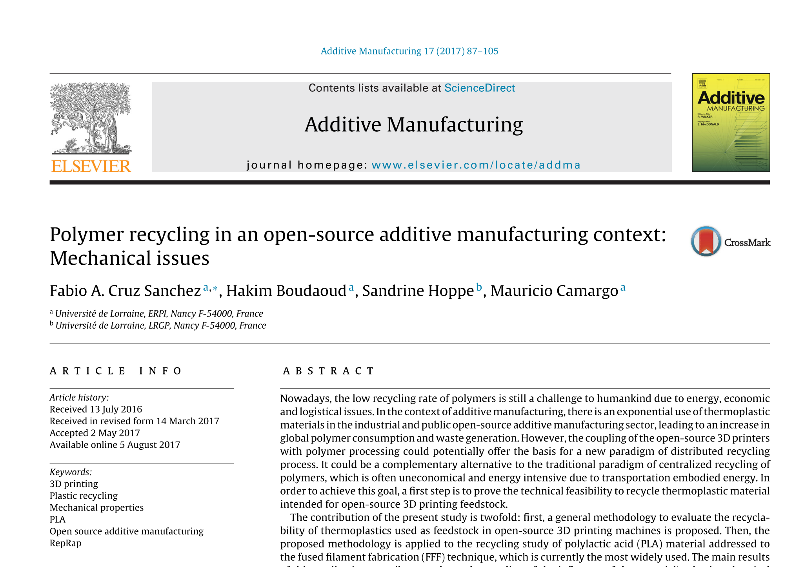
]
Music Vs. Research
.pull-left[

] .pull-right[
]
The document pipeline
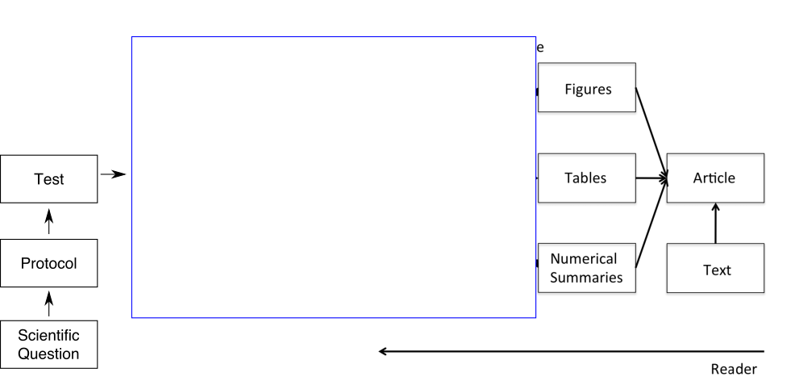
The document pipeline
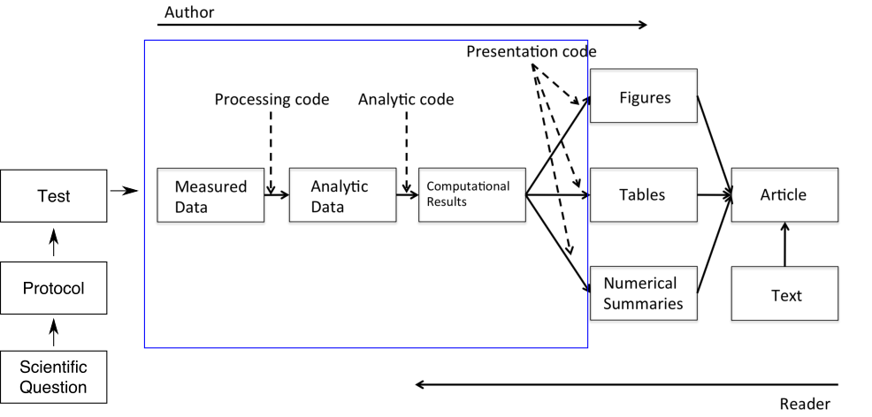
How to describe in detail this section for Research & Industry purposes
exclude: true
Reproducibility and Replicability
.pull-left[ Reproducibility:
Refers to the ability of a researcher to duplicate the results of a prior study using the same materials as were used by the original researcher (Goodman, Fanelli, and Ioannidis 2016).
- Focuses on the validity of the data analysis
- “Can we trust this analysis?”
]
.pull-rigth[ Replicability:
This is the act of repeating an entire study, independently of the original investigator without the use of original data (but generally using the same methods).
- Important for policymakers and regulatory decisions
]
.footnote.small[ Goodman, Steven N., Daniele Fanelli, and John P. A. Ioannidis. 2016. “What Does Research Reproducibility Mean?” Science Translational Medicine 8 (341): 341ps12–341ps12. https://doi.org/10.1126/scitranslmed.aaf5027.]
Why do we need Reproducible Research?
- Avoid misconduct such as fraudulent data and plagiarism
- Data-intensive research (e.g Big data research)
- Distributed research
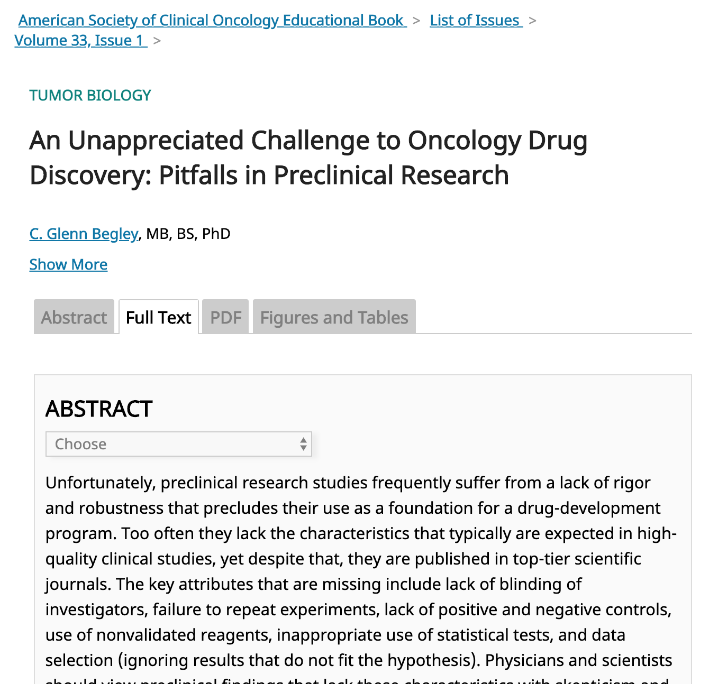  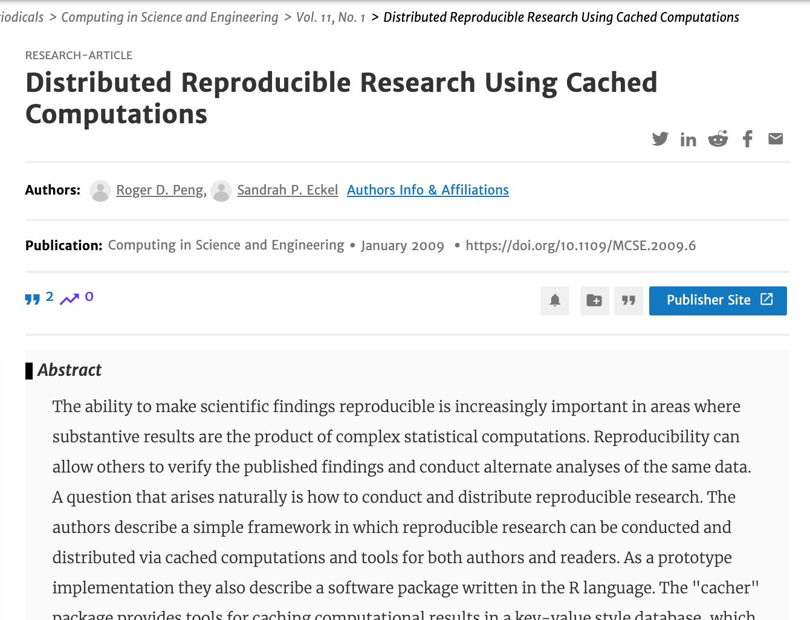
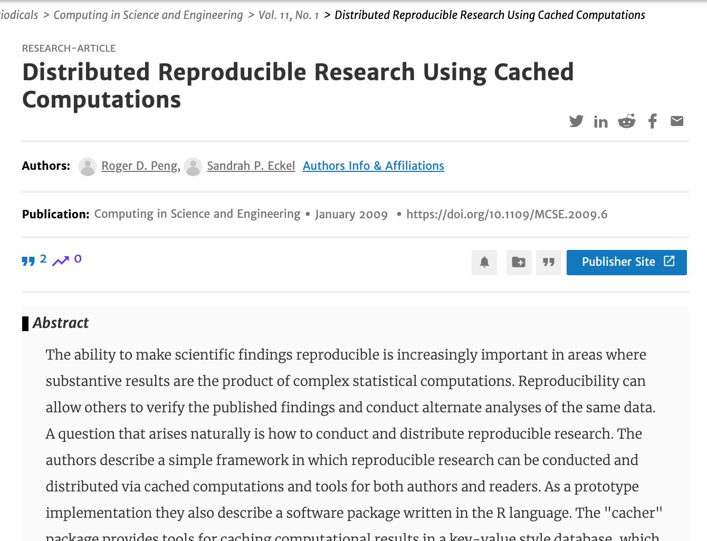
background-image: url(“https://figures-na.ssl-figures-amazon.com/figures/I/41KSVC8Q2JL.jpg”) background-position: 90% 50% background-size: 30%
Reproducibility concepts
Two key elements:
- .bg-yellow[Literate programming for enabling reproducibilty]
- Version control for enhancing transparency
Literate programming refers to the use of a computing environment for authoring documents that contain a mix of natural (eg. English) and computer (eg. R) languages (Schulte et al. 2012)
.footnote[ D. E. Knuth, Literate Programming, The Computer Journal, Volume 27, Issue 2, 1984, Pages 97–111, https://doi.org/10.1093/comjnl/27.2.97]
Literate Programming
.pull-left[

] .pull-right[
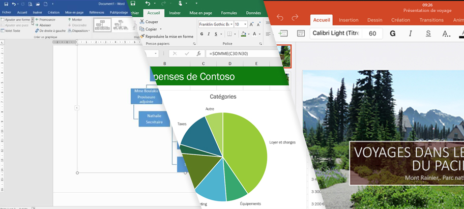
]
class: middle
Motivation 2: Data Visualization
What is Data Visualization?
Graphical representations of data
Use different colors, shapes, and the coordinate system to summarize data
Tell a story
Useful for understanding
R is FREE
- R is a language and environment for statistical computing and graphics. (R project)
- In August 1993, designed by
.pull-left[

(New Zealand Statistician)
]
.pull-right[

(Canadian Statistician)
]
class: center
Download R from CRAN

background-image: url(“https://www.rstudio.com/wp-content/uploads/2018/10/RStudio-Logo-Flat.png”) background-size: 90%
R Studio
background-image: url(“https://res-5.cloudinary.com/crunchbase-production/image/upload/c_thumb,h_256,w_256,f_auto,g_faces,z_0.7,q_auto:eco/v1398402407/chvmdsmomg96uoz8g3ad.jpg”) background-size: 20% background-position: 99% 1%
R Studio
2009, Joseph J. Allaire founded RStudio.
2011, RStudio IDE for R was launched.
“RStudio is dedicated to sustainable investment in free and open-source software for data science.” (16 Jan 2022)

.footnote[ Source: https://www.rstudio.com/about/]
class: center
R \(\rightleftharpoons\) RStudio
.pull-left[ ## Imagine RStudio as a stylish car …
.big-text[🚗]
]
.pull-right[ ## and R as its powerful engine.
.big-text[⚙️]
]
class: center
RStudio IDE
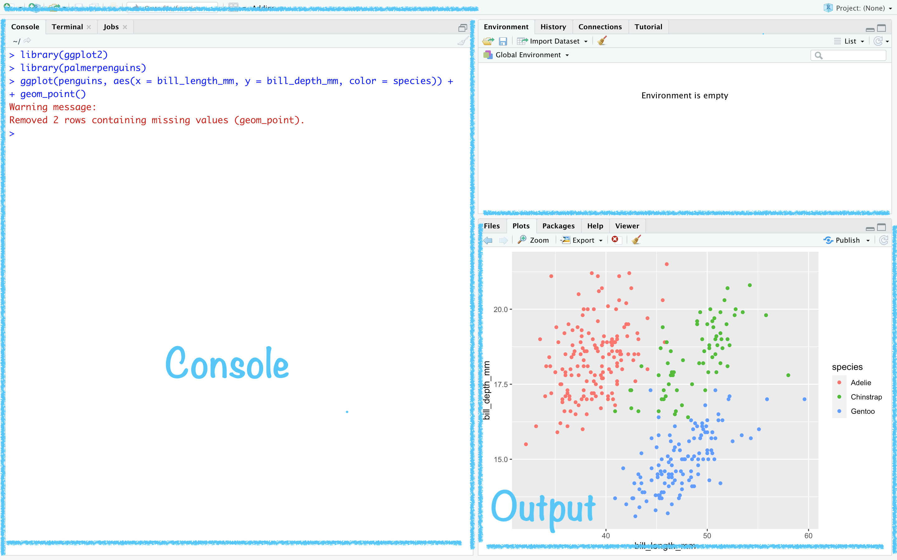
class: middle
For example
-Covid - Open Data Science (In french)
Summary
Reproducible research as a minimum standard, particularly for studies that are difficult to replicate
Change of
Infrastructure is needed for creating and distributing reproducible documents, beyond what is currently available
There is a growing number of tools for creating reproducible documents
Some challengues
- It is not the solution for everyone.
class: middle
Mental Model
for (Applied) data science
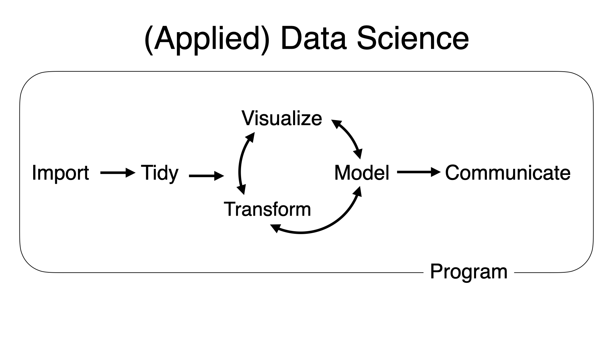
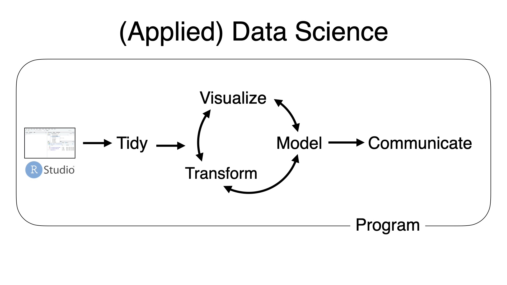
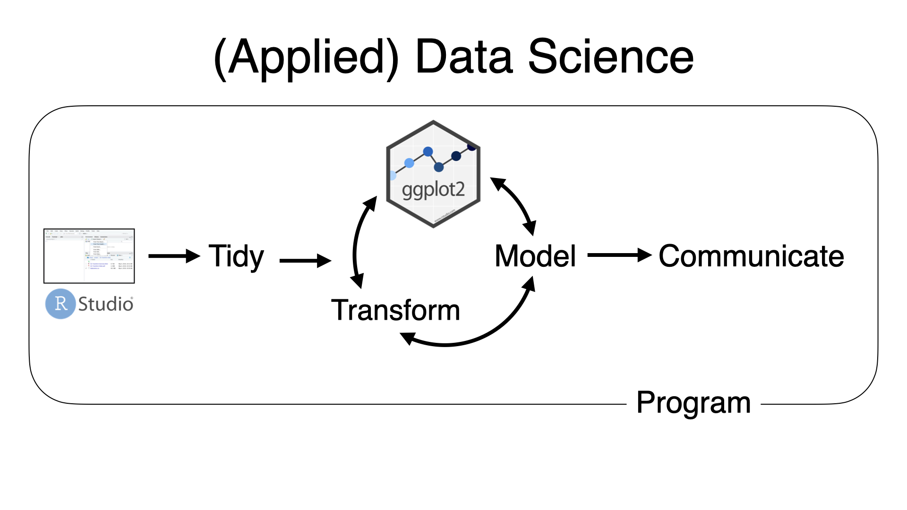
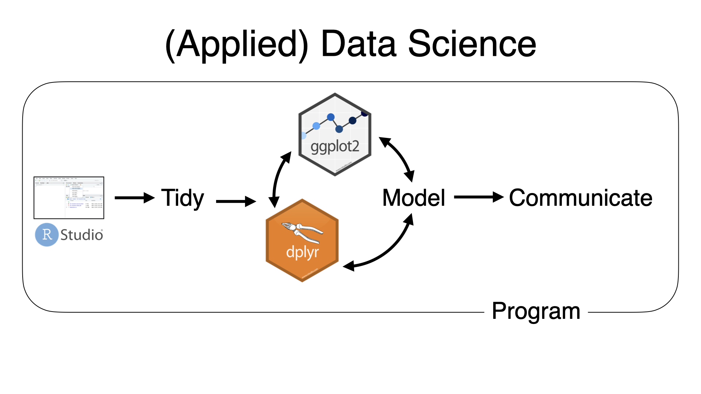
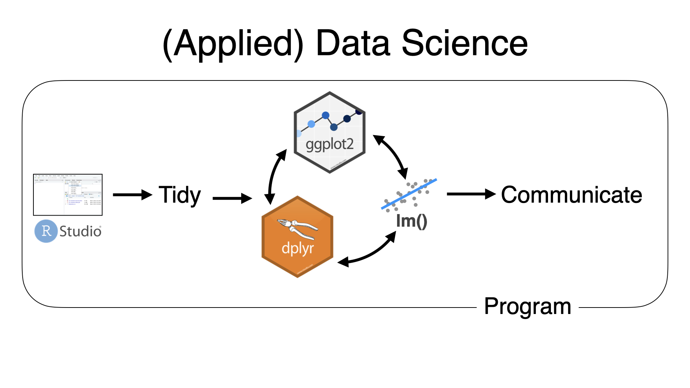
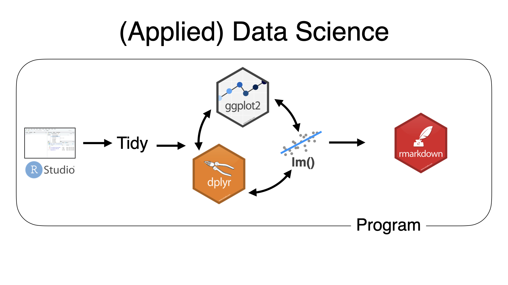
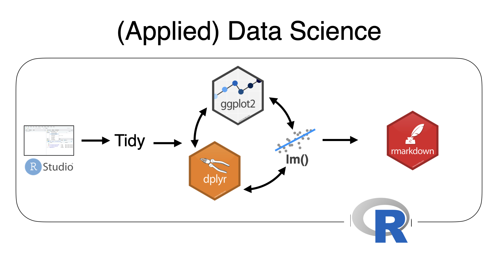
class: middle
Goal of the Day:
Make your AttrakDiff / UEQ data analysis!!
class: middle
Goal of the Day:
Make your AttrakDiff / UEQ data analysis!!
.center[ ## https://posit.cloud/content/5349937]
So:
Sign up
Make a .bg-yellow[Permanent Copy].
Voila!, C’est bon
class: center, middle
Pause of 5 minutes
class: center, hide-logo
background-image: url(“figures/learn.png”) background-size: 125%
background-color: #F5F4F2
.footnote[ Source: https://education.rstudio.com]